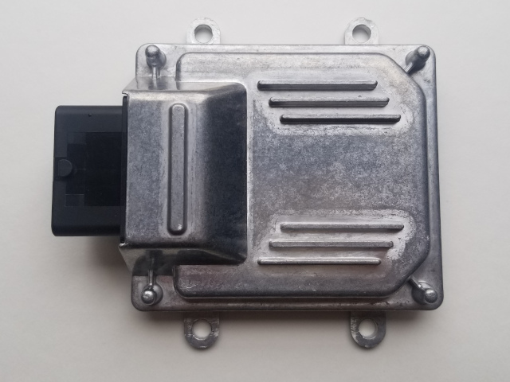
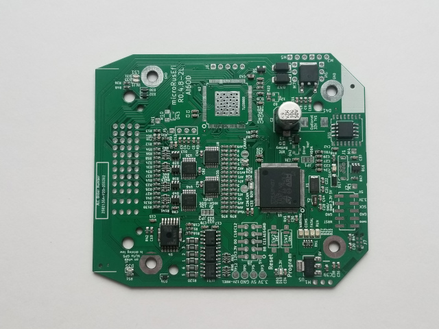

microRusEfi is the latest fully assembled rusEfi ECU. It was primaraly designed for 4 cylinder applications with or without drive-by-wire electronic throttle body.
Pinout
Documentation
Interactive BOM
microRusEfi GitHub
Forum thread
Capabilities
- Primary VR or Hall input (configurable with few resistor changes)
- Secondary Hall input
- x4 analog thermistor (temperature) inputs
- x10 analog voltage inputs (0-5v)
- x4 high-Z injector outputs
- x2 high-current low side outputs for IAC/VVT/other solenoids
- Dedicated main relay control output
- x4 low-current low side outputs for relays or warning lights
- x4 5v logic-level ignition outputs
- x2 5v/12v configurable logic level outputs (requires resistor changes)
- Electronic throttle body (drive by wire)
- CAN connectivity on the plug
- USB connectivity on the plug


Home (c) rusEfi llc, 2020